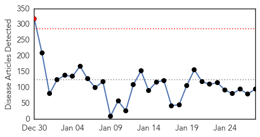
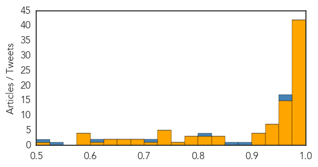
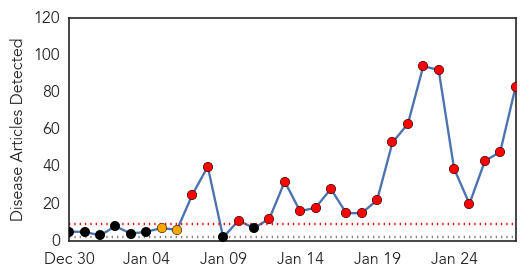
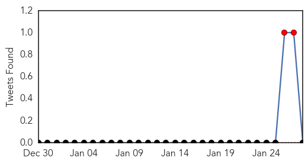

Ebola
30-Day Web Trend
1 alerts, 0 warnings

30-Day Twitter Trend
0 alerts, 0 warnings

Article Locations

Article Confidences
Top Articles:
- 1.000
- Scientists ask if Ebola immunises as well as kills
- 1.000
- Ebola outbreak eases as world's largest treatment centre dismantled in Liberia
- 1.000
- Scientists ask if Ebola immunises as well as kills
- 1.000
- Ghana, Business Advice, Jobs, News, Business Directory, Real Estate, Finance, Forms, Auto
- 1.000
- Ebola outbreak eases as world's largest treatment centre dismantled in Liberia
- 1.000
- Ebola is creating a new epidemic of untreated illness and injury
- 0.999
- How declining Ebola cases could imperil hopes of having vaccines ready
- 0.999
- Turkey to send medical aid to African countries
- 0.999
- Editorial: Improving international responses to Ebola epidemics
- 0.999
- Ebola is on a Steep Decline for Now, But What's the Resurgence Risk?
- 0.998
- Turkey to send medical aid to African countries
- 0.998
- Liberia closes Ebola centre as crisis recedes
- 0.998
- World’s largest Ebola unit dismantled as outbreak retreats
- 0.998
- Guinea sees bump in Ebola cases, group reports vaccine trial results
- 0.998
- Ebola Vaccine Appears Safe, Triggers Immune Response, U.K. Study Finds
- 0.998
- World's largest Ebola unit dismantled as outbreak retreats
- 0.996
- Wellcome Trust investment in Ebola research tops £10 million
- 0.996
- Ebola faces total eradication
- 0.996
- Ebola vaccine trials to begin in Liberia, Guinea and Sierra Leone
- 0.996
- Researcher on the Clock to Improve Early Ebola Detection
- 0.996
- NIH Ebola candidate vaccine has acceptable safety profile
- 0.993
- Ebola vaccine is 'ready' for West Africa after it was tested on 60 British volunteers
- 0.992
- Ebola vaccine is safe, says researchers
- 0.992
- Ebola trial suggests vaccine is safe
- 0.991
- World's largest Ebola unit dismantled as outbreak retreats
- 0.991
- After Ebola, WHO to set up contingency fund, develop 'surge capacity' -
- 0.989
- Liverpool Ebola medic felt "duty-bound" to volunteer
- 0.988
- The World Won't Tolerate Another Pandemic: World Bank President
- 0.987
- Virginia Hospital Center contributes to Ebola fight in Sierra (...)
- 0.987
- West Africa recovers from Ebola outbreak
- 0.986
- Whitby nurse selected for unprecedented Red Cross Ebola mission
- 0.986
- Whitby nurse selected for unprecedented Red Cross Ebola mission
- 0.985
- Food, medicine and education – GIZ support for West Africa continues - Sierra Leone
- 0.983
- AU Summit to Discuss Lessons, Stigma of Ebola
- 0.983
- AU Summit to Discuss Lessons, Stigma of Ebola
- 0.982
- Cautious optimism follows results from trials of early Ebola vaccine
- 0.980
- Missing 5-month-old found, man turns himself in
- 0.980
- Off-duty firefighter rescues drowning girl
- 0.980
- Man shot in neck in SE Baltimore
- 0.979
- China commits $1m to train Ghana health workers in Ebola management
- 0.979
- Heroic Villains
- 0.978
- WHO Executive Board appoints Dr Matshidiso Moeti as new Regional Director for Africa
- 0.971
- Doctor From Botswana Becomes First Female Head of WHO For Africa
- 0.970
- Liberia’s Cuttington University needs help to reopen
- 0.969
- Pres. Sirleaf expresses gratitude
- 0.969
- HEALTH BULLETIN - New Primary Health Care Renewal Policy approved by Cabinet
- 0.967
- Ebola vaccine 'potential to work'
- 0.966
- New Primary Health Care Renewal Policy approved by Cabinet
- 0.965
- Progress in development of a new Ebola vaccine
- 0.964
- How the Peace Corps continues to fight Ebola
Showing top 50 articles...
Top Tweets:
- 0.958
- Ebola Update: 22,057 confirmed, probable & suspected cases reported in 3 most affected countries, with 8,795 deaths. EbolaResponse
- 0.922
- RT: Ebola is declining but medical care for non-Ebola patients is still critical due to collapse of public health system http://t.co/…
- 0.883
- RT: Ebola Epidemic Takes a Toll on Sierra Leone’s Surgeons, by http://t.co/wJtQJwGMO5…
- 0.870
- Ebola Outbreak in West Africa, update 27 January 2015 http://t.co/GdPPoWOGj6
- 0.829
- Monrovia: ebola on wane, but agencies tripping over each other. One bizarrely planning 2 train 4 ebola centre jobs that no longer exist
- 0.752
- Guinea. The Path of the Ebola Outbreak http://t.co/LnRJIps0Kq via
- 0.703
- RT: Ebola is still a part of daily life in Freetown. Exclusive photos from the outbreak in Sierra Leone's capital: http://t.c…
- 0.696
- Village Responses to Ebola Virus Disease in Rural Eastern SierraLeone: Second Interim Report http://t.co/3OCfYxe6ID
- 0.676
- Get to zero cases, stay at zero cases, rebuild the health & social systems devastated by Ebola. @Eboladeeply http://t.co/o8lbpoa7Po
- 0.673
- .@WHO breakdown shows more women than men among Ebola cases. More than half of cases aged 15-44. http://t.co/h391FudQI4
- 0.639
- SierraLeone. How Ebola Found Fertile Ground in Sierra Leone's Chaotic Capital http://t.co/D39MVV4ioH
- 0.639
- RT: Get to zero cases, stay at zero cases, rebuild the health & social systems devastated by Ebola. @Eboladeeply http://t.co…
- 0.639
- RT: Get to zero cases, stay at zero cases, rebuild the health & social systems devastated by Ebola. @Eboladeeply http://t.co…
- 0.638
- Anthropology & Ebola ClinicalResearcht http://t.co/svUZBJNKSY
- 0.620
- Today's news on avianflu avianinfluenza Ebola EbolaResponse MERS birdflu Antimicrobial http://t.co/u08i2JOjgc
- 0.615
- Communication with rebellious communities during an outbreak of Ebola in Guinea: an anthropological approach http://t.co/uiJap3AfYV
- 0.612
- RT: @UN_Radio: "Intensify surveillance" to beat Ebola says new health chief EbolaResponse @WHO http://t.co/ELFSsi3wer
- 0.602
- Do traditions spread Ebola? http://t.co/jH07Qi46jR
- 0.564
- On the ground: @FitzGab toured areas impacted by Ebola outbreak TackleEbola http://t.co/G2mpT3VVPX
- 0.540
- Guinea. Ebola’s PatientZero http://t.co/xLOYxl50J8 via
- 0.531
- Liberia. FoodSecurity Snapshot, 22 January 2015 ebola http://t.co/jf9wWF9o6A
- 0.530
- How will the Ebola epidemic end? @somedicine http://t.co/1IXls5TqlQ
- 0.528
- Ebola important example of globalhealthsecurity work. Health threat anywhere is a health threat everywhere. http://t.co/o8lbpoa7Po
Measles
30-Day Web Trend
20 alerts, 2 warnings

30-Day Twitter Trend
2 alerts, 0 warnings

Article Locations

Article Confidences

Top Articles:
- 0.998
- U.S. Measles Outbreak Now Numbers 87 Cases
- 0.998
- Measles Outbreak Grows to 87 Cases
- 0.998
- U.S. Measles Outbreak Now Numbers 87 Cases
- 0.997
- U.S. Measles Outbreak Now Numbers 87 Cases
- 0.995
- Opinion: Measles outbreak underscores importance of vaccination
- 0.988
- Official: Health Department ‘hyper-vigilant watching for measles cases’ : Local
- 0.987
- Arizona monitoring 1,000 people who could have been exposed to measles
- 0.985
- 7 AZ residents sickened with measles no longer infectious
- 0.984
- Possible Measles Exposure in Cumberland Co. Resident
- 0.983
- Health department warns of Shippensburg measles case
- 0.981
- BEN BOYCHUK: An epidemic of irresponsibility
- 0.980
- Measles Outbreak Spreads to Chicago Area, Number Exposed Continues to Grow
- 0.978
- Measles case confirmed at University of Minnesota
- 0.974
- ‘Critical Point’ Reached As Hundreds Face Possible Exposure
- 0.972
- Measles 101: Signs, symptoms and prevention
- 0.972
- Arizona measles outbreak reaches 'critical point'
- 0.971
- 2 more Arizona measles cases tied to Disneyland
- 0.970
- Measles Outbreak Linked to Disneyland May Have Reached Illinois
- 0.968
- HEALTH: Desert school sends home 66 unvaccinated students
- 0.965
- California measles outbreak: What you need to know
- 0.960
- U student develops measles; doctors alerted
- 0.960
- Disneyland measles outbreak
- 0.960
- No Additional Measles Cases Reported In El Paso County
- 0.957
- Confirmed measles case in Twin Cities
- 0.953
- Arizona monitoring 1,000 people for measles
- 0.952
- Kaiser calling parents who refused to vaccinate against measles
- 0.949
- State health official says vaccinations are important
- 0.949
- Sioux Falls child contracts measles, not linked to Mitchell cases
- 0.947
- Potential measles exposure reported in Susquehanna Valley
- 0.945
- U of M student has the measles, officials confirm
- 0.944
- Department of Health stresses importance of getting vaccinated
- 0.943
- Arizona health officials monitor hundreds for measles as outbreak linked to Disneyland grows
- 0.940
- Possible measles exposure in Cumberland County, Department of Health warns
- 0.935
- yet; but can spread quickly
- 0.932
- WILDOMAR: Hospital employee diagnosed with active tuberculosis
- 0.931
- Cal State Long Beach: Student had, recovered from measles
- 0.930
- First measles case has Illinois authorities concerned
- 0.922
- Measles Outbreak Spreads to 7 States, Health Officials Warn of More Cases
- 0.911
- 195 Reasons Why the Anti-Vaccine Movement Impacts All of Us
- 0.910
- Measles outbreak at Disneyland cancels family trip
- 0.905
- Here’s a Quick Guide on Measles
- 0.899
- Measles outbreak in Beijing's high-rise building under control - Headlines, features, photo and videos from ecns.cn
- 0.893
- S.B. Health Officials Brief Media on Potential Measles Case
- 0.892
- Calif. school releases students unvaccinated for measles
- 0.892
- Calif. school releases students unvaccinated for measles
- 0.879
- Physicians encouraging parents to vaccinate children
- 0.870
- Almost 100 Cases In 8 States, 1000 Monitored In Arizona
- 0.869
- Rubella outbreak occurs at company in southern Vietnam
- 0.864
- Measles cases spread to northern California and back east; Kern Co. doctors say to take caution
- 0.857
- University of Minn. student tests positive for measles
Showing top 50 articles...
Top Tweets:
-
No tweets found for Jan 28, 2015